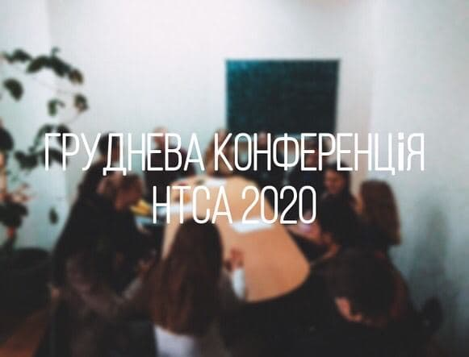
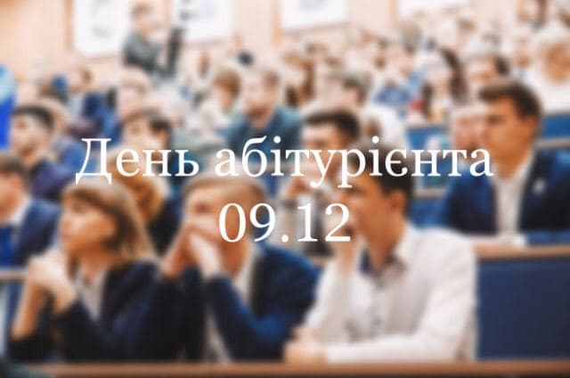

12.12.2020
Тайный Санта на Математическом!!! Хочешь получить подарок или письмо от Тайного Санты?
Заходи на канал Математичного факультету в телеграме и читай условия!!!

10.12.20 була проведена груднева конференція НТСА математичного
Крім основного складу НТСА, до конференції приєдналися і інші студенти послухати про різні об'єкти нашого Всесвіту.
Поговорили про планети Сонячної системи, чорні діри та білі карлики
Заходи на канал, чтобы узнать больше новостей Математичного факультету

09.12.2020 на математичному був проведений день відкритих дверей для абітурієнтів
В дистанційному форматі керівництво математичного на чолі з деканом і завкафедрами разом з головою студентської ради
розповіли абітурієнтам про наш факультет, переваги навчання і взагалі про нас.
Будемо сподіватися на рясне поповнення наших рядів у наступному році
Заходи на канал, чтобы узнать больше новостей Математичного факультету